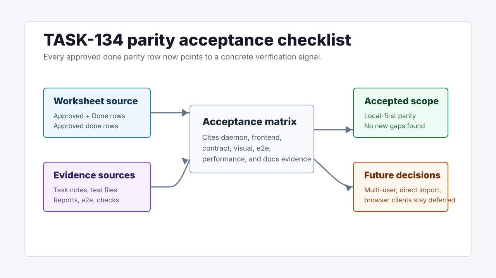

Grimoire Task Report
Parity Acceptance Checklist

Before
Parity implementation tasks were completed across many task notes and reports, but there was no single acceptance page mapping each approved done parity row to concrete verification evidence. The worksheet also still showed PAR-051 and PAR-052 as pending after TASK-133 completed the reporting and visual sweep.
Problem
A reviewer needed a compact way to verify that every approved parity gap had daemon, frontend, generated API, visual, e2e, performance, or documentation evidence before the beta is described as parity-complete for the current local-first scope.
Changes Added
- Added
docs/parity/parity-acceptance-checklist.mdwith a per-PAR evidence matrix and explicit remediation notes. - Updated the parity worksheet so PAR-051, PAR-052, and PAR-054 reflect completed TASK-133/TASK-134 work.
- Linked the checklist from the recurring release checklist and the release decision validation table.
- Updated the parity report implementation status to include final task-report, visual, contract, and acceptance evidence.
Result
The parity batch now has a final closeout artifact for the approved local-first scope while keeping multi-user/server mode, direct Grimoire backup import, URL/summary mutation, packaged browser clients, endpoint aliases, and bookmark importance as explicit future or rejected decisions.
Verification
- Reviewed the parity worksheet, parity report, recurring release checklist, completed task notes, and TASK-133 visual evidence.
- Linked every approved done parity row to at least one concrete verification signal in the checklist.
- Ran focused documentation and task-report verification after the edits.
Files Changed
docs/parity/parity-acceptance-checklist.mddocs/parity/grimoire-parity-task-proposals.mddocs/parity/grimoire-feature-parity-report.mddocs/release-checklist.mddocs/release-decision-v0.1.0-beta.mddocs/task-reports/2026/06/2026-06-08-task-134-parity-acceptance-checklist/index.html
Follow-Ups
Refresh the checklist whenever a parity-linked API, daemon, frontend, import/export, visual-report, or release-documentation surface changes after this batch.